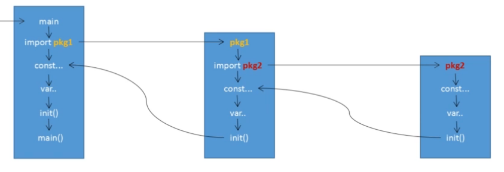
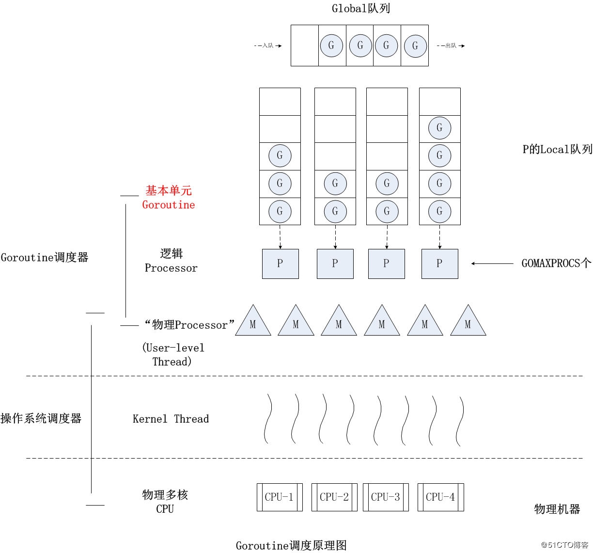

安装与配置 环境变量：
GOROOT：Go的安装目录
GOPATH：Go的工作区的集合，通过go get下载的扩展包会放在其中
GOBIN：存放Go程序的可执行文件
PATH：export PATH=$PATH:$GOROOT:/bin:$GOBIN
基本规则 工作区 工作区是放置Go源码文件的目录。一般情况下，Go源码文件都需要存放到工作区中。但是对于命令源码文件来说，这不是必须的。
每一个工作区的结构都类似包含：golib/,src/,pkg/,bin/
src目录用于存放源码文件;以代码包为组织形式
pkg目录用于存放归档文件(名称以.a为后缀的文件) 所有归档文件都会被存放到该目录下的平台相关目录中，用样以代码包为组织形式
平台相关目录:两个隐含的Go语言环境变量:GOOS和GOARCH
命令基础
go build 用于编译源码文件、代码包、依赖包
go run 可以编译并运行Go源码文件
go get 主要是用来动态获取远程代码包
基础语法 基本结构 1 2 3 4 5 6 7 8 9 10 11 12 13 14 15 16 17 18 19 20 21 package mainimport "fmt" const NAME string = "Hello" var a string = "aaa" type b int type User struct {} type IUser interface {} func fun () } func main () fmt.Println("hello" ) }
package
package是最基本得分发单位 和工程管理中依赖关系的体现
每个Go语言的代码文件开头 都拥有一个package声明，表示源码文件所属的代码包
要生成GO语言可执行程序 ，必须要有main的package包，且必须在该包下有**main()**函数
同一路径下只能存在一个package ，一个package可以拆分成多个源文件组成
import 1 2 import "pac1" import "pac2"
等价于：
1 2 3 4 import ( "pac1" "pac2" )
如果一个main导入其他包，包将被顺序导入
如果导入的包中有其他包（包B），会首先导入B包，然后初始化B包中的常量与变量，最后如果B中有init，会自动执行init（）；
所有包导入完成之后才会对main中常量和变量进行初始化，然后执行main中的init函数（如果存在），最后执行main函数；
如果一个包被导入多次，则该包只会被导入一次。

变量和常量 变量声明 第一种，指定变量类型，声明后若不赋值，使用默认值。
1 2 var v_name v_typev_name = value
第二种，根据值自行判定变量类型。
第三种，省略var, :=左侧的变量不应该是已经声明过的，否则会导致编译错误。这是使用变量的首选形式，但是它只能被用在函数体内，而不可以用于全局变量的声明与赋值。使用操作符 := 可以高效地创建一个新的变量，称之为初始化声明。
如果想要交换两个变量的值，则可以简单地使用 a, b = b, a，两个变量的类型必须是相同。
多变量声明 1 2 3 4 5 6 7 8 9 10 11 12 13 var vname1, vname2, vname3 type vname1, vname2, vname3 = v1, v2, v3 var vname1, vname2, vname3 = v1, v2, v3 vname1, vname2, vname3 := v1, v2, v3 var ( vname1 v_type1 vname2 v_type2 )
1 2 3 4 5 6 7 8 9 10 11 12 13 14 15 16 17 18 19 20 21 package mainvar x, y int var ( a int b bool ) var c, d int = 1 , 2 var e, f = 123 , "hello" func main () g, h := 123 , "hello" println (x, y, a, b, c, d, e, f, g, h) } 以上实例执行结果为： 0 0 0 false 1 2 123 hello 123 hello
值类型和引用类型 所有像 int、float、bool 和 string 这些基本类型都属于值类型，使用这些类型的变量直接指向存在内存中的值,当使用等号 = 将一个变量的值赋值给另一个变量时，如：j = i，实际上是在内存中将 i 的值进行了拷贝, 值类型的变量的值存储在栈中。
更复杂的数据通常会需要使用多个字，这些数据一般使用引用类型保存。一个引用类型的变量 r1 存储的是 r1 的值所在的内存地址（数字），或内存地址中第一个字所在的位置。这个内存地址为称之为指针，这个指针实际上也被存在另外的某一个字中。同一个引用类型的指针指向的多个字可以是在连续的内存地址中（内存布局是连续的），这也是计算效率最高的一种存储形式；也可以将这些字分散存放在内存中，每个字都指示了下一个字所在的内存地址。
当使用赋值语句 r2 = r1 时，只有引用（地址）被复制,如果 r1 的值被改变了，那么这个值的所有引用都会指向被修改后的内容。
常量 1 2 3 4 5 6 7 8 9 10 11 const identifier [type ] = valueconst c_name1, c_name2 = value1, value2const ( Unknown = 0 Female = 1 Male = 2 )
字符串类型在 go 里是个结构, 包含指向底层数组的指针和长度,这两部分每部分都是 8 个字节，所以字符串类型大小为 16 个字节。
iota iota，特殊常量，可以认为是一个可以被编译器修改的常量。iota 在 const关键字出现时将被重置为 0(const 内部的第一行之前)，const 中每新增一行常量声明将使 iota 计数一次(iota 可理解为 const 语句块中的行索引)。
iota 可以被用作枚举值：
1 2 3 4 5 const ( a = iota b = iota c = iota )
第一个 iota 等于 0，每当 iota 在新的一行被使用时，它的值都会自动加 1；所以 a=0, b=1, c=2 可以简写为如下形式：
1 2 3 4 5 const ( a = iota b c )
1 2 3 4 5 6 7 8 9 10 11 12 13 14 15 16 17 18 19 20 21 package mainimport "fmt" func main () const ( a = iota b c d = "ha" e f = 100 g h = iota i ) fmt.Println(a,b,c,d,e,f,g,h,i) }
再看个有趣的的 iota 实例：
1 2 3 4 5 6 7 8 9 10 11 12 13 14 15 16 17 18 19 20 21 22 23 24 25 26 27 package mainimport "fmt" const ( i=1 <<iota j=3 <<iota k l ) func main () fmt.Println("i=" ,i) fmt.Println("j=" ,j) fmt.Println("k=" ,k) fmt.Println("l=" ,l) }
new和make 1 2 func make (t Type, size ...IntegerType) Type func new (Type) *Type
二者都是内存的分配（堆上），但是make只用于slice、map以及channel的初始化（非零值）；而new用于类型的内存分配，并且内存置为零(new不常用)。
流程控制 条件语句 if-else/switch
语句
描述
if bool {} else {}
判断语句
switch
switch 语句用于基于不同条件执行不同动作。
1 2 3 4 5 6 7 8 9 10 11 if true { } else { } switch expr { case 1 : break default : break }
select 1 2 3 4 5 6 7 8 9 10 11 ch1 := make (chan int , 1 ) ch2 := make (chan int , 1 ) select { case e1 := <-ch1: fmt.Printf("1th case is selected. e1=%v.\n" , e1) case e2 := <-ch2: fmt.Printf("2th case is selected. e2=%v.\n" , e2) default : fmt.Println("No data!" ) }
如果该select语句被执行时通道ch1和ch2中都没有任何数据，那么肯定只有default case会被执行。但是，只要有一个通道在当时有数据就不会轮到default case执行了。显然，对于包含通道接收操作的case来讲，其执行条件就是通道中存在数据（或者说通道未空）。如果在当时有数据的通道多于一个，那么Go语言会通过一种伪随机的算法来决定哪一个case将被执行。
defer defer代码块会在函数调用链表中增加一个函数调用。这个函数调用不是普通的函数调用，而是会在函数正常返回，也就是return之后添加一个函数调用。因此，defer通常用来释放函数内部变量。
defer执行顺序为先进后出
1 2 3 4 5 6 7 8 9 10 11 12 13 func deferIt () defer func () fmt.Print(1 ) }() defer func () fmt.Print(2 ) }() defer func () fmt.Print(3 ) }() fmt.Print(4 ) }
当defer被声明时，其参数就会被实时解析,函数值和函数参数被求值，但函数不会立即调用
1 2 3 4 5 6 func a () i := 0 defer fmt.Println(i) i++ return }
1 2 3 4 5 6 7 8 9 func deferIt3 () f := func (i int ) int fmt.Printf("%d " ,i) return i * 10 } for i := 1 ; i < 5 ; i++ { defer fmt.Printf("%d " , f(i)) } }
defer可以读取有名返回值
1 2 3 4 func c () (i int ) defer func () return 1 }
1 2 3 4 5 6 7 func deferIt4 () for i := 1 ; i < 5 ; i++ { defer func () fmt.Print(i) }() } }
1 2 3 4 5 6 7 func deferIt4 () for i := 1 ; i < 5 ; i++ { defer func (n int ) fmt.Print(n) }(i) } }
循环语句 go语言没有while语句，可用for实现。
1 2 3 for i := 1 ; i < 101 ; i++ { }
函数 go中函数可以返回多个值：
1 2 3 4 func function_name ([parameter type ]) [return_types ...] [return x...] }
函数作为变量：
1 2 3 4 5 6 7 8 9 func main () getSquareRoot := func (x float64 ) float64 return math.Sqrt(x) } fmt.Println(getSquareRoot(9 )) }
Go 语言支持匿名函数，可作为闭包：
1 2 3 4 5 6 7 8 9 10 11 12 13 14 15 16 17 18 19 20 21 22 func getSequence () func () int i:=0 return func () int i+=1 return i } } func main () nextNumber := getSequence() fmt.Println(nextNumber()) fmt.Println(nextNumber()) fmt.Println(nextNumber()) nextNumber1 := getSequence() fmt.Println(nextNumber1()) fmt.Println(nextNumber1()) }
既然可以在代表函数的变量上实施调用表达式，那么在匿名函数上肯定也是可行的。因为它们的本质是相同的。示例如下(这里的result变量的类型不是函数类型，而与后面的匿名函数的结果类型是相同的)：
1 2 3 var result = func (part1 string , part2 string ) string return part1 + part2 }("1" , "2" )
方法就是一个包含了接受者的函数，接受者可以是命名类型或者结构体类型的一个值或者是一个指针。所有给定类型的方法属于该类型的方法集。
1 2 3 func (variable_name variable_data_type) function_name () [return_type ] }
1 2 3 4 5 6 7 8 9 10 11 12 13 14 15 16 type Circle struct { radius float64 } func main () var c1 Circle c1.radius = 10.00 fmt.Println("圆的面积 = " , c1.getArea()) } func (c Circle) getArea () float64 return 3.14 * c.radius * c.radius }
数据类型 bool 数字类型
uint: 32或64位
int: 同于uint
uint8
uint16
uint32
uint64
int8
int16
int32
int64
float32
float64
complex64: 32位实数和虚数
complex128: 64位实数和虚数
byte: 类似uint8
rune: 类似int32
uintptr: 无符号整型，用于存放一个指针
字符串类型 string：Go的字符串是由单个字节连接起来的。Go语言的字符串的字节使用UTF-8编码标识Unicode文本。
数组类型 1 2 3 var variable_name [SIZE] variable_typevar balance = [5 ]float32 {1000.0 , 2.0 , 3.4 , 7.0 , 50.0 }
如果忽略 [] 中的数字不设置数组大小，Go 语言会根据元素的个数来设置数组的大小：
1 var balance = [...]float32 {1000.0 , 2.0 , 3.4 , 7.0 , 50.0 }
多维数组：
1 var variable_name [SIZE1][SIZE2]...[SIZEN] variable_type
初始化二维数组：
1 2 3 4 5 a = [3 ][4 ]int { {0 , 1 , 2 , 3 } , {4 , 5 , 6 , 7 } , {8 , 9 , 10 , 11 }, }
向函数传递数组：
1 2 3 4 5 void myFunction(param [10 ]int ) {} void myFunction(param []int )
指针 空指针为nil，指代零值或空值。
1 2 3 4 5 var var_name *var -type var var_name [5 ]*var -type var var_name **var -type
指针作为函数参数：
1 2 3 4 5 6 7 8 9 10 11 12 13 14 15 16 17 18 19 20 21 22 23 24 func main () var a int = 100 var b int = 200 fmt.Printf("交换前 a 的值 : %d\n" , a ) fmt.Printf("交换前 b 的值 : %d\n" , b ) swap(&a, &b); fmt.Printf("交换后 a 的值 : %d\n" , a ) fmt.Printf("交换后 b 的值 : %d\n" , b ) } func swap (x *int , y *int ) var temp int temp = *x *x = *y *y = temp }
结构体类型 用法：
1 2 3 4 5 6 7 8 9 10 type struct_variable_type struct { member definition; member definition; ... member definition; } variable_name := structure_variable_type {value1, value2...valuen} variable_name := structure_variable_type { key1: value1, key2: value2..., keyn: valuen}
访问时通过.操作访问结构体成员。
切片类型 1 2 3 4 5 6 7 8 9 10 11 12 var identifier []type var slice1 []type = make ([]type , len )slice1 := make ([]type , len ) make ([]T, length, capacity)
1 2 3 4 5 6 7 8 9 10 11 12 13 14 15 16 17 18 19 20 s :=[] int {1 ,2 ,3 } s := arr[:] s := arr[startIndex:endIndex] s := arr[startIndex:] s := arr[:endIndex] s1 := s[startIndex:endIndex] s :=make ([]int ,len ,cap )
切片是可索引的，并且可以由 len() 方法获取长度。切片提供了计算容量的方法 cap() 可以测量切片最长可以达到多少。
一个切片在未初始化之前默认为 nil，长度为 0.
对于底层数组容量是 k 的切片 slice[i:j] 来说：长度: j-i;容量: k-i.
1 2 3 4 5 6 7 8 9 10 11 12 13 14 15 16 17 func main () var numbers []int printSlice(numbers) if (numbers == nil ){ fmt.Printf("切片是空的" ) } } func printSlice (x []int ) fmt.Printf("len=%d cap=%d slice=%v\n" ,len (x),cap (x),x) }
1 2 3 4 5 6 7 8 9 10 11 12 13 14 15 16 17 18 19 20 21 22 23 24 25 26 27 28 29 30 31 32 func main () numbers := []int {0 ,1 ,2 ,3 ,4 ,5 ,6 ,7 ,8 } printSlice(numbers) fmt.Println("numbers ==" , numbers) fmt.Println("numbers[1:4] ==" , numbers[1 :4 ]) fmt.Println("numbers[:3] ==" , numbers[:3 ]) fmt.Println("numbers[4:] ==" , numbers[4 :]) numbers1 := make ([]int ,0 ,5 ) printSlice(numbers1) number2 := numbers[:2 ] printSlice(number2) number3 := numbers[2 :5 ] printSlice(number3) } func printSlice (x []int ) fmt.Printf("len=%d cap=%d slice=%v\n" ,len (x),cap (x),x) }
append的用法有两种：
slice = append(slice, elem1, elem2)
slice = append(slice, anotherSlice…)
append要点：
用append把一个或多个元素添加在一个slice的后面；
append的slice有一个underlying array，此即slice和array的关系；
另外slice有一个length和capability的概念；
如果slice还有剩余的空间，可以添加这些新元素，那么append就将新的元素放在slice后面的空余空间中；
如果slice的空间不足以放下新增的元素，那么就需要重现创建一个数组；这时可能是alloc、也可能是realloc的方式分配这个新的数组；也就是说，这个新的slice可能和之前的slice在同一个起始地址上，也可能不是一个新的地址。——通常而言，是一个新的地址。
分配了新的地址之后，再把原来slice中的元素逐个拷贝到新的slice中，并返回。
当一个append执行达到了切片的容量，它会自动扩容为原来的两倍大小
copy用法：
copy(to_slide, from_slide)
1 2 3 4 5 6 7 8 9 10 11 12 13 14 15 16 17 18 19 20 21 22 23 24 25 26 27 28 29 30 func main () var numbers []int printSlice(numbers) numbers = append (numbers, 0 ) printSlice(numbers) numbers = append (numbers, 1 ) printSlice(numbers) numbers = append (numbers, 2 , 3 , 4 ) printSlice(numbers) numbers = append (numbers, 5 , 6 ) printSlice(numbers) numbers1 := make ([]int , len (numbers), (cap (numbers))*2 ) copy (numbers1, numbers) printSlice(numbers1) } func printSlice (x []int ) fmt.Printf("len=%d cap=%d slice=%v\n" , len (x), cap (x), x) }
Range range 关键字用于 for 循环中迭代数组(array)、切片(slice)、通道(channel)或集合(map)的元素。在数组和切片中它返回元素的索引和索引对应的值，在集合中返回 key-value 对的 key 值。
1 2 3 4 5 6 7 8 9 10 11 12 13 14 15 16 17 18 19 20 21 22 23 24 func main () nums := []int {2 , 3 , 4 } sum := 0 for _, num := range nums { sum += num } fmt.Println("sum:" , sum) for i, num := range nums { if num == 3 { fmt.Println("index:" , i) } } kvs := map [string ]string {"a" : "apple" , "b" : "banana" } for k, v := range kvs { fmt.Printf("%s -> %s\n" , k, v) } for i, c := range "go" { fmt.Println(i, c) } }
Map类型 1 2 3 4 5 var map_variable map [key_data_type]value_data_typemap_variable := make (map [key_data_type]value_data_type)
1 2 3 4 5 6 7 8 9 10 11 12 13 14 15 16 17 18 19 20 21 22 23 24 25 func main () var countryCapitalMap map [string ]string countryCapitalMap = make (map [string ]string ) countryCapitalMap [ "France" ] = "Paris" countryCapitalMap [ "Italy" ] = "罗马" countryCapitalMap [ "Japan" ] = "东京" countryCapitalMap [ "India " ] = "新德里" for country := range countryCapitalMap { fmt.Println(country, "首都是" , countryCapitalMap [country]) } captial, ok := countryCapitalMap [ "美国" ] if (ok) { fmt.Println("美国的首都是" , captial) } else { fmt.Println("美国的首都不存在" ) } }
delete() 函数用于删除集合的元素, 参数为 map 和其对应的 key。实例如下：
1 2 3 4 5 6 7 8 9 10 11 12 13 14 15 16 17 18 19 20 21 func main () countryCapitalMap := map [string ]string {"France" : "Paris" , "Italy" : "Rome" , "Japan" : "Tokyo" , "India" : "New delhi" } fmt.Println("原始地图" ) for country := range countryCapitalMap { fmt.Println(country, "首都是" , countryCapitalMap [ country ]) } delete (countryCapitalMap, "France" ) fmt.Println("法国条目被删除" ) fmt.Println("删除元素后地图" ) for country := range countryCapitalMap { fmt.Println(country, "首都是" , countryCapitalMap [ country ]) } }
List 包含于conatiner/list包中。
初始化：
1 2 3 4 5 变量名 := list.New() var 变量名 list.List
添加元素：
1 2 3 4 5 6 7 8 9 10 11 12 func (l *List) PushBack (v interface {}) *Element func (l *List) PushBackList (other *List) func (l *List) PushFront (v interface {}) *Element func (l *List) PushFrontList (other *List) func (l *List) InsertAfter (v interface {}, mark *Element) *Element func (l *List) InsertBefore (v interface {}, mark *Element) *Element
移动元素：
1 2 3 4 5 6 7 8 func (l *List) MoveAfter (e, mark *Element) func (l *List) MoveBefore (e, mark *Element) func (l *List) MoveToBack (e *Element) func (l *List) MoveToFront (e *Element)
访问元素：
1 2 3 4 func (l *List) Back () *Element func (l *List) Front () *Element
遍历列表：
1 2 3 4 func (e *Element) Next () *Element func (e *Element) Prev () *Element
获取列表长度：
1 func (l *List) Len () int
移除元素：
1 2 3 4 func (l *List) Remove (e *Element) interface func (l *List) Init () *List
interface类型 1 2 3 4 5 6 7 8 9 10 11 12 13 14 15 16 17 18 19 20 21 22 type interface_name interface { method_name1 [return_type] method_name2 [return_type] method_name3 [return_type] ... method_namen [return_type] } type struct_name struct { } func (struct_name_variable struct_name) method_name1 () [return_type ] } func (struct_name_variable struct_name) method_namen () [return_type ] }
1 2 3 4 5 6 7 8 9 10 11 12 13 14 15 16 17 18 19 20 21 22 23 24 25 26 27 type Phone interface { call() } type NokiaPhone struct {} func (nokiaPhone NokiaPhone) call () fmt.Println("I am Nokia, I can call you!" ) } type IPhone struct {} func (iPhone IPhone) call () fmt.Println("I am iPhone, I can call you!" ) } func main () var phone Phone phone = new (NokiaPhone) phone.call() phone = new (IPhone) phone.call() }
Channel类型 Channel创建 channel 使用内置的 make 函数创建:
Channel读写 channel的读写操作(channel 一定要初始化后才能进行读写操作，否则会永久阻塞):
1 2 3 4 5 6 7 8 9 10 11 12 ch := make (chan int ) ch <- x x <- ch x = <- ch value, ok := <- ch1
这里的变量ok的值同样是bool类型的。它代表了通道值的状态，true代表通道值有效，而false则代表通道值已无效（或称已关闭）。如果在接收操作进行之前或过程中通道值被关闭了，则接收操作会立即结束并返回一个该通道值的元素类型的零值。
Channel关闭 golang 提供了内置的 close 函数对 channel 进行关闭操作。
1 2 ch := make (chan int ) close (ch)
关闭一个未初始化(nil) 的 channel 会产生 panic
重复关闭同一个 channel 会产生 panic
向一个已关闭的 channel 中发送消息会产生 panic
从已关闭的 channel 读取消息不会产生 panic，且能读出 channel 中还未被读取的消息，若消息均已读出，则会读到类型的零值。从一个已关闭的 channel 中读取消息永远不会阻塞，并且会返回一个为 false 的 ok-idiom，可以用它来判断 channel 是否关闭
关闭 channel 会产生一个广播机制，所有向 channel 读取消息的 goroutine 都会收到消息
1 2 3 4 5 6 7 8 9 10 11 12 ch := make (chan int , 10 ) ch <- 11 ch <- 12 close (ch)for x := range ch { fmt.Println(x) } x, ok := <- ch fmt.Println(x, ok)
无缓存的 channel 从无缓存的 channel 中读取消息会阻塞，直到有 goroutine 向该 channel 中发送消息；同理，向无缓存的 channel 中发送消息也会阻塞，直到有 goroutine 从 channel 中读取消息。
非缓冲的通道值的初始化方法如下：
有缓存的 channel 有缓存的 channel 的声明方式为指定 make 函数的第二个参数，该参数为 channel 缓存的容量
1 ch := make (chan int , 10 )
有缓存的 channel 类似一个阻塞队列(采用环形数组实现)。当缓存未满时，向 channel 中发送消息时不会阻塞，当缓存满时，发送操作将被阻塞，直到有其他 goroutine 从中读取消息；相应的，当 channel 中消息不为空时，读取消息不会出现阻塞，当 channel 为空时，读取操作会造成阻塞，直到有 goroutine 向 channel 中写入消息。
1 2 3 4 ch := make (chan int , 3 ) <- ch
1 2 3 4 5 6 7 ch := make (chan int , 3 ) ch <- 1 ch <- 2 ch <- 3 ch <- 4
通过 len 函数可以获得 chan 中的元素个数，通过 cap 函数可以得到 channel 的缓存长度。
双向/单向Channel 默认情况下，通道都是双向的，即双向通道。如果数据只能在通道中单向传输，那么该通道就被称作单向通道。在编写类型声明的时候可以这样做：
1 type Receiver <-chan int
类型Receiver代表了一个只可从中接收数据的单向通道类型。这样的通道也被称为接收通道。在关键字chan左边的接收操作符<-形象地表示出了数据的流向。相对应的，如果想声明一个发送通道类型，那么应该这样：
可以把一个双向通道值赋予上述类型的变量：
1 2 3 4 5 6 var myChannel = make (chan int , 3 )var sender Sender = myChannelvar receiver Receiver = myChannel var myChannel1 chan int = sender
单向通道的主要作用是约束程序对通道值的使用方式。
channel应用 广播功能实现 当一个通道关闭时, 所有对此通道的读取的goroutine都会退出阻塞。
1 2 3 4 5 6 7 8 9 10 11 12 13 14 15 16 17 18 19 20 package mainimport ( "fmt" "time" ) func notify (id int , channel chan int ) <-channel fmt.Printf("%d receive a message.\n" , id) } func broadcast (channel chan int ) fmt.Printf("Broadcast:\n" ) close (channel) func main () channel := make (chan int ,1 ) for i:=0 ;i<10 ;i++ { go notify(i,channel) } go broadcast(channel) time.Sleep(time.Second) }
select使用 select用于在多个channel上同时进行侦听并收发消息，当任何一个case满足条件时即执行，如果没有可执行的case则会执行default的case，如果没有指定default case，则会阻塞程序。select的语法如下：
1 2 3 4 5 6 7 select {case communication clause : statement(s); case communication clause : statement(s); default : statement(s); }
Select多路复用中：
每个case都必须是一次通信
所有channel表达式都会被求值
所有被发送的表达式都会被求值
如果任意某个通信可以进行，它就执行；其它被忽略。
如果有多个case都可以运行，Select会随机公平地选出一个执行。其它不会执行。
否则，如果有default子句，则执行default语句。如果没有default子句，select将阻塞，直到某个通信可以运行；Go不会重新对channel或值进行求值。
1 2 3 4 5 6 7 8 9 10 11 12 13 14 15 16 17 18 19 20 21 22 23 24 25 26 27 28 29 30 31 32 33 34 35 36 37 38 39 40 41 42 43 44 45 46 47 48 49 50 package mainimport ( "fmt" "time" ) func doWork (channels *[10]chan int ) for { select { case x1 := <-channels[0 ]: fmt.Println("receive x1: " ,x1) case x2 := <-channels[1 ]: fmt.Println("receive x2: " ,x2) case x3 := <-channels[2 ]: fmt.Println("receive x3: " ,x3) case x4 := <-channels[3 ]: fmt.Println("receive x4: " ,x4) case x5 := <-channels[4 ]: fmt.Println("receive x5: " ,x5) case x6 := <-channels[5 ]: fmt.Println("receive x6: " ,x6) case x7 := <-channels[6 ]: fmt.Println("receive x7: " ,x7) case x8 := <-channels[7 ]: fmt.Println("receive x8: " ,x8) case x9 := <-channels[8 ]: fmt.Println("receive x9: " ,x9) case x10 := <-channels[9 ]: fmt.Println("receive x10: " ,x10) } } } func main () var channels [10 ]chan int go doWork(&channels) for i := 0 ; i < 10 ; i++ { channels[i] = make (chan int ,1 ) channels[i]<- i } time.Sleep(time.Second*5 ) } receive x4: 3 receive x10: 9 receive x9: 8 receive x5: 4 receive x2: 1 receive x7: 6 receive x8: 7 receive x1: 0 receive x3: 2 receive x6: 5
类型转换 错误处理 error Go 语言通过内置的错误接口提供了非常简单的错误处理机制。error类型是一个接口类型，这是它的定义：
1 2 3 type error interface { Error() string }
1 2 3 4 5 6 7 8 9 10 11 12 13 14 15 package errorsfunc New (text string ) error return &errorString{text} } type errorString struct { s string } func (e *errorString) Error () string return e.s }
我们可以在编码中通过实现 error 接口类型来生成错误信息。函数通常在最后的返回值中返回错误信息。使用errors.New 可返回一个错误信息：
1 2 3 4 5 6 7 8 9 10 11 12 13 14 func Sqrt (f float64 ) (float64 , error) if f < 0 { return 0 , errors.New("math: square root of negative number" ) } } func main () result, err:= Sqrt(-1 ) if err != nil { fmt.Println(err) } }
自定义：
1 2 3 4 5 6 7 8 9 10 11 12 13 14 15 16 17 18 19 20 21 22 23 24 25 26 27 28 29 30 31 32 33 34 35 36 37 38 39 40 type DivideError struct { dividee int divider int } func (de *DivideError) Error () string strFormat := ` Cannot proceed, the divider is zero. dividee: %d divider: 0 ` return fmt.Sprintf(strFormat, de.dividee) } func Divide (varDividee int , varDivider int ) (result int , errorMsg string ) if varDivider == 0 { dData := DivideError{ dividee: varDividee, divider: varDivider, } errorMsg = dData.Error() return } else { return varDividee / varDivider, "" } } func main () if result, errorMsg := Divide(100 , 10 ); errorMsg == "" { fmt.Println("100/10 = " , result) } if _, errorMsg := Divide(100 , 0 ); errorMsg != "" { fmt.Println("errorMsg is: " , errorMsg) } }
panic panic可被意译为运行时恐慌,因为它只有在程序运行的时候才会被“抛出来”,并且，恐慌是会被扩散的,当有运行时恐慌发生时，它会被迅速地向调用栈的上层传递。如果不显式地处理它的话，程序的运行瞬间就会被终止——程序崩溃。内建函数panic可以让我们人为地产生一个运行时恐慌,不过，这种致命错误是可以被恢复的,在Go语言中，内建函数recover就可以做到这一点。
实际上，内建函数panic和recover是天生的一对,前者用于产生运行时恐慌，而后者用于“恢复”它。不过要注意，recover函数必须要在defer语句中调用才有效,因为一旦有运行时恐慌发生，当前函数以及在调用栈上的所有代码都是失去对流程的控制权,只有defer语句携带的函数中的代码才可能在运行时恐慌迅速向调用栈上层蔓延时“拦截到”它。
1 2 3 4 5 defer func () if p := recover (); p != nil { fmt.Printf("Fatal error: %s\n" , p) } }()
recover()函数会返回一个interface{}类型的值,如果不为nil，那么就说明当前确有运行时恐慌发生,这时我们需根据情况做相应处理。注意，一旦defer语句中的recover函数调用被执行了，运行时恐慌就会被恢复，不论是否进行了后续处理, 所以，我们一定不要只“拦截”不处理。
panic函数可接受一个interface{}类型的值作为其参数，也就是说，可以在调用panic函数的时候可以传入任何类型的值，不过，建议在这里只传入error类型的值,这样它表达的语义才是精确的,更重要的是，当我们调用recover函数来“恢复”由于调用panic函数而引发的运行时恐慌的时候，得到的值正是调用后者时传给它的那个参数,因此，有这样一个约定是很有必要的。
面向对象编程 在Golang的对象可以用一句话总结：“面向对象就是将要处理的数据跟函数进行绑定的方法”。
封装 1 2 3 4 5 6 7 8 9 10 11 12 13 type Foo struct { baz string } func (f *Foo) echo () fmt.Println(f.baz) } func main () f := Foo{baz: "hello" } f.echo() }
继承 1 2 3 4 5 6 7 8 9 10 11 12 13 14 15 16 type Foo struct { baz string } type Bar struct { Foo } func (f *Foo) echo () fmt.Println(f.baz) } func main () b := Bar{Foo{baz: "hello" }} b.echo() }
多态 1 2 3 4 5 6 7 8 9 10 11 12 13 14 15 16 type Foo interface { test() } type Bar struct {}type Baz struct {}func (b Bar) test () func (b Baz) test () func main () var f Foo f = Bar{} f = Baz{} fmt.Println(f) }
1 2 3 4 5 6 7 8 9 10 11 12 13 14 15 16 17 18 19 20 21 22 23 24 25 26 27 28 29 30 31 32 33 34 35 package objimport "fmt" type Person interface { Buy(value int ) } type User struct { Name string Money int } func (user *User) Buy (value int ) user.Money -= value fmt.Printf("%s Buy a thing of %d, rest %d\n" , user.Name, value, user.Money) } type Worker struct { User IdW string } type Student struct { IdS string User } func main () user := obj.Worker{User: obj.User{Name: "hearing" , Money:21 }, IdW: "001" } user.Buy(10 ) }
Go并发编程 基础概念
并行(parallel)：指在同一时刻，有多条指令在多个处理器上同时执行。
并发(concurrency)：指在同一时刻只能有一条指令执行，但多个进程指令被快速的轮换执行，使得在宏观上具有多个进程同时执行的效果，但在微观上并不是同时执行的，只是把时间分成若干段，使多个进程快速交替的执行。
Coroutine(协程) Coroutine（协程）是一种用户态的轻量级线程，特点如下：
轻量级线程
非抢占式多任务处理，由协程主动交出控制权。
编译器/解释器/虚拟机层面的任务
多个协程可能在一个或多个线程上运行。
子程序是协程的一个特例。
不同语言对协程的支持：
C++通过Boost.Coroutine实现对协程的支持
Java不支持
Python通过yield关键字实现协程，Python3.5开始使用async def对原生协程的支持
Goroutine 概述 goroutine说到底其实就是线程，但是它比线程更小，十几个goroutine可能体现在底层就是五六个线程，Go语言内部帮你实现了这些goroutine之间的内存共享。执行goroutine只需极少的栈内存(大概是4~5KB)，当然会根据相应的数据伸缩。
在Go语言中，只需要在函数调用前加上关键字go即可创建一个并发任务单元，新建的任务会被放入队列中，等待调度器安排。进程在启动的时候，会创建一个主线程，主线程结束时，程序进程将终止，因此，进程至少有一个线程。main函数里，必须让主线程等待，确保进程不会被终止。go语言中并发指的是让某个函数独立于其它函数运行的能力，一个goroutine是一个独立的工作单元，Go的runtime（运行时）会在逻辑处理器上调度goroutine来运行，一个逻辑处理器绑定一个操作系统线程，因此goroutine不是线程，是一个协程。
进程：一个程序对应一个独立程序空间
线程：一个执行空间，一个进程可以有多个线程
逻辑处理器：执行创建的goroutine，绑定一个线程
调度器：Go运行时中的，分配goroutine给不同的逻辑处理器
全局运行队列：所有刚创建的goroutine队列
本地运行队列：逻辑处理器的goroutine队列
当创建一个goroutine后，会先存放在全局运行队列中，等待Go运行时的调度器进行调度，把goroutine分配给其中的一个逻辑处理器，并放到逻辑处理器对应的本地运行队列中，最终等着被逻辑处理器执行即可。
Go的并发是管理、调度、执行goroutine的方式。默认情况下，Go默认会给每个可用的物理处理器都分配一个逻辑处理器。可以在程序开头使用runtime.GOMAXPROCS(n)设置逻辑处理器的数量。runtime.GOMAXPROCS(runtime.NumCPU())。对于并发，Go语言本身自己实现的调度，对于并行，与物理处理器的核数有关，多核就可以并行并发，单核只能并发。
1 2 3 4 5 6 7 8 9 10 11 12 13 14 15 16 17 18 19 20 21 22 23 24 package mainimport ( "fmt" "sync" ) func main () var wg sync.WaitGroup wg.Add(2 ) go func () defer wg.Done() for i := 0 ; i < 10000 ; i++ { fmt.Printf("Hello,Go.This is %d\n" , i) } }() go func () defer wg.Done() for i := 0 ; i < 10000 ; i++ { fmt.Printf("Hello,World.This is %d\n" , i) } }() wg.Wait() }
sync.WaitGroup使用非常简单，使用Add方法设设置计数器为2，每一个goroutine的函数执行完后，调用Done方法减1。Wait方法表示如果计数器大于0，就会阻塞，main函数会一直等待2个goroutine完成再结束。
调度机制 
为了实现M：N线程调度机制，Go引入了3个结构体：
M：操作系统的内核空间线程
G：goroutine对象，G结构体包含调度一个goroutine所需要的堆栈和instruction pointer（IP指令指针），以及其它一些重要的调度信息。每次go调用的时候，都创建一个G对象。
P：Processor，调度的上下文，实现M：N调度模型的关键，M必须拿到P才能对G进行调度，P限定了go调度goroutine的最大并发度。每一个运行的M都必须绑定一个P。
P的个数是GOMAXPROCS（最大256），启动时固定，一般不修改； M的个数和P的个数不一定相同（会有休眠的M或者不需要太多的M）；每一个P保存着本地G任务队列，也能使用全局G任务队列。
runtime包
runtime.Gosched()用于让出CPU时间片，让出当前goroutine的执行权限，调度器安排其它等待的任务运行，并在下次某个时候从该位置恢复执行。
调用runtime.Goexit()将立即终止当前goroutine执⾏，调度器确保所有已注册defer延迟调用被执行。
调用runtime.GOMAXPROCS()用来设置可以并行计算的CPU核数的最大值，并返回设置前的值。
死锁 Go程序中死锁是指所有的goroutine在等待资源的释放,Goroutine死锁产生的原因如下：
只在单一的goroutine里操作无缓冲信道，一定死锁
非缓冲信道上如果发生流入无流出，或者流出无流入，会导致死锁
因此，解决死锁的方法有：
取走无缓冲通道的数据或是发送数据到无缓冲通道
使用缓冲通道